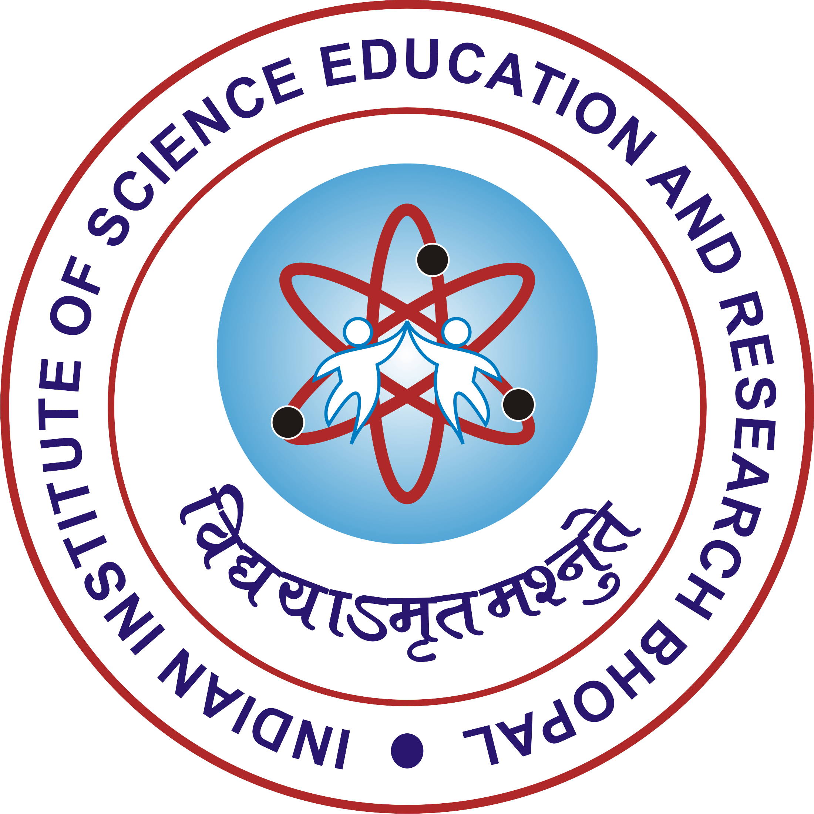

About Me
I'm a Master's student in the BS-MS program at the Indian Institute of Science Education and Research (IISER) Bhopal, specializing in Computer Science within the Department of Electrical Engineering and Computer Science (EECS). I joined the SIRL Lab under the mentorship of Dr. Haroon Lone in my second year and have since dedicated extensive time—including focused summer research periods—to my work there, which has led to published papers at top venues like ACM ISWC. My research interests lie at the intersection of Human-Centered Computation and Ubiquitous Computing, where I have gained hands-on experience with machine learning, wearable sensing, signal processing, and IoT systems. I am actively looking for PhD and Predoc positions in these fields.
Academia

BS-MS in Engineering Sciences (Major: Computer Science)
Indian Institute of Science Education and Research (IISER) Bhopal
(2022 - 2027)
Projects
Noise Detection in ECG Signal
Apr 2024 – Jan 2025 · Dr. Haroon Lone
Detected noise/artifacts in ECG signals from wearable devices. Applied machine learning techniques for data cleaning, visualization, and feature extraction. Achieved 96.4% accuracy and 91.8% AUPRC using various classification algorithms while addressing class imbalance. Collected real-life data using Shimmer sensors from approximately 6 participants.
View PaperIoT-Enabled Braille Display for UPI Payment Verification
Jan 2025 – May 2025 · Course Project
Developed a low-cost IoT Braille display (under $35 USD) for private UPI payment verification. Engineered a full-stack system using an Android app, BLE, and an ESP32-powered hardware prototype. Optimized the design to use 4 instead of 6 servo motors per digit, reducing cost and complexity. Validated the prototype in a user study, achieving high accuracy (4.8/5.0) and usability (4.0/5.0) scores.
View Project PDFEvaluating Federated Learning for Mood Inference from Smartphone Sensing Data
Aug 2025 – Nov 2025 · Course Project
Evaluated federated learning on the DiversityOne dataset (250 participants, 6 countries). Preprocessed heterogeneous data using windowing, KNN-imputation, and feature extraction (50–63 features). Designed a hybrid FL model with a shared global encoder and local country-specific encoders for personalized cross-cultural mood inference. Achieved near-baseline AUROC and matched centralized performance across countries.
View on arXivAnalyzing Multimodal Physiological Signals for Social Anxiety Detection
Jan 2026 – June 2026 · Bachelor's Thesis · Dr. Haroon Lone
Analyzing multimodal physiological signals (ECG, EDA) to study responses during social anxiety–inducing tasks. Performing statistical testing and feature engineering to quantify group-level physiological differences. Building predictive machine learning models to detect social anxiety–related biomarkers from wearable sensor data.
View PaperMultimodal IMU Data for Real-Time Cooking Activity Recognition
May 2025 – July 2025 · Dr. Suchetana Chakraborty, IIT Jodhpur
Collected and analyzed multimodal IMU data for real-time cooking activity recognition. Explored public datasets and developed ML and ConvLSTM models for time-series based Human Activity Recognition. Conducted a user study with 40 real-world recordings and applied preprocessing, EDA, and modeling to interpret IMU signal patterns.
View PaperPublications
Sharmad Kalpande, Nilesh Kumar Sahu, and Haroon R. Lone. 2025. Investigating the Generalizability of ECG Noise Detection Across Diverse Data Sources. In Proceedings of the 2025 ACM International Symposium on Wearable Computers (ISWC '25). Association for Computing Machinery, New York, NY, USA, 113–119. Published. [Link]
Sharmad Kalpande, NK Sahu, and HR Lone. 2026. Are You Performing, Anticipating, or Observing? Role-Aware Physiological Sensing in Group Interactions. ACM International Symposium on Wearable Computers (UbiComp / ISWC), 2026. Accepted. [Link]
Posters
Exploring Physiological Signals in Social Anxiety Disorder with Wearable ECG and EDA Devices
EECS Symposium, IISER Bhopal (Feb 2025)
Internships
I have been fortunate to complete research internships at premier institutes like IISER Bhopal and IIT Jodhpur. Click the button below to see the details of my projects and work.
View InternshipsGrants & Awards
Ubicomp/ISWC 2025 Travel Grant
Awarded a travel grant to attend and present my work at the ACM International Symposium on Wearable Computers (ISWC '25).
Best Poster Presentation
EECS Symposium, IISER Bhopal (Feb 2025)
Awarded for examining correlations between Social Anxiety Disorder (SAD) and physiological signals from wearable devices.
Contact Me
I am always open to discussing new projects, research collaborations, or opportunities. Please feel free to reach out through any of the platforms below.